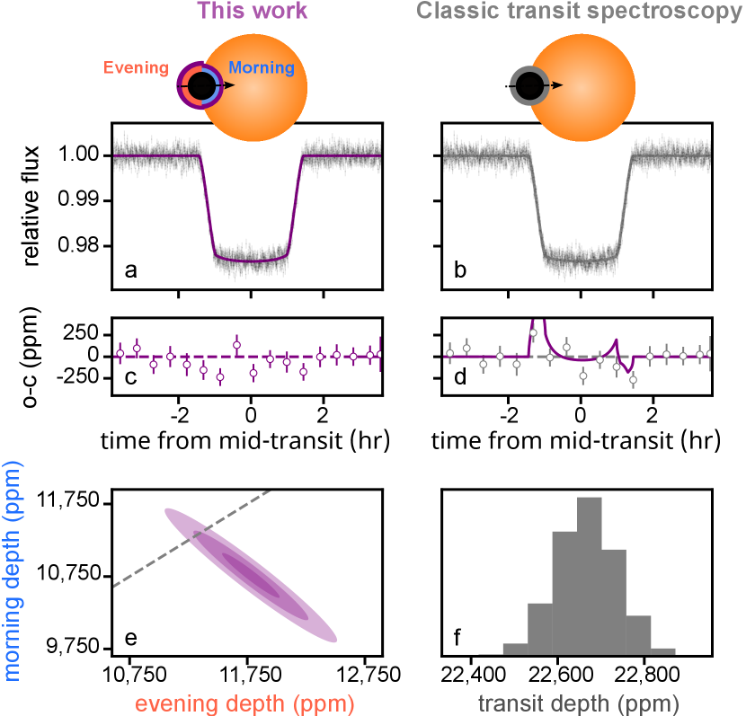
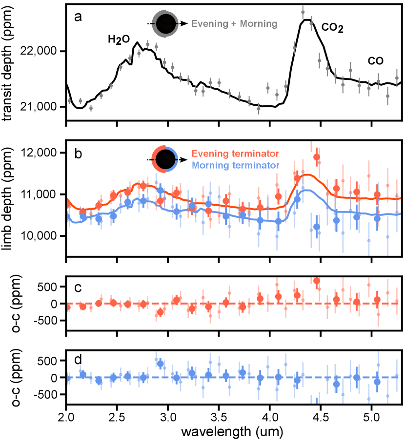
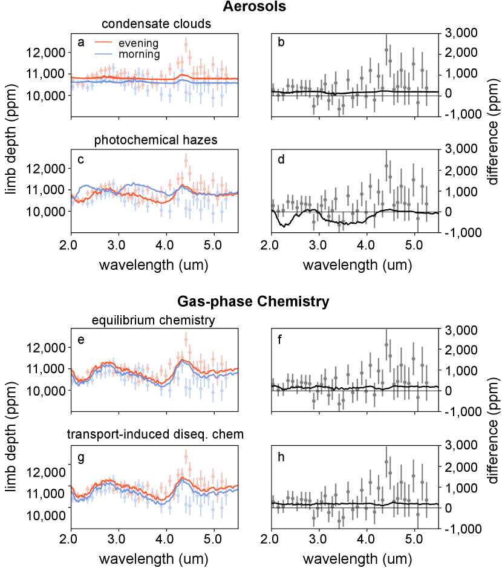
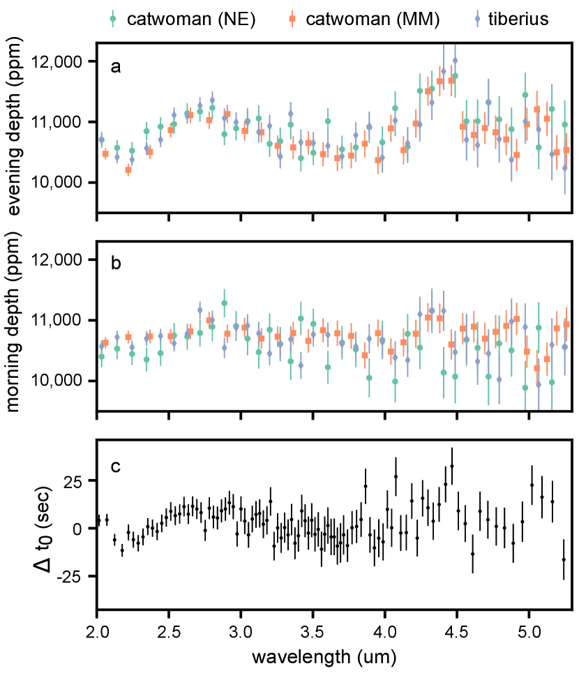
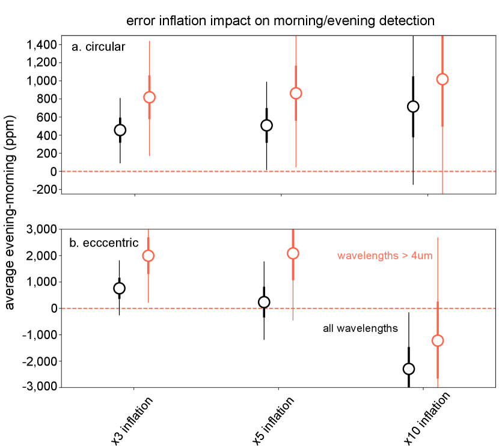
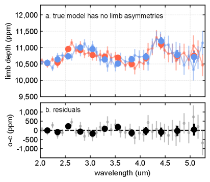
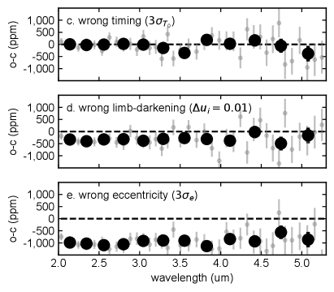
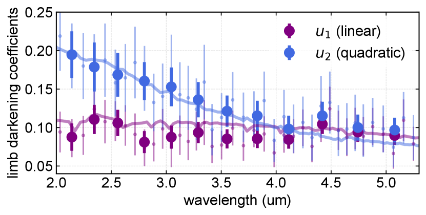
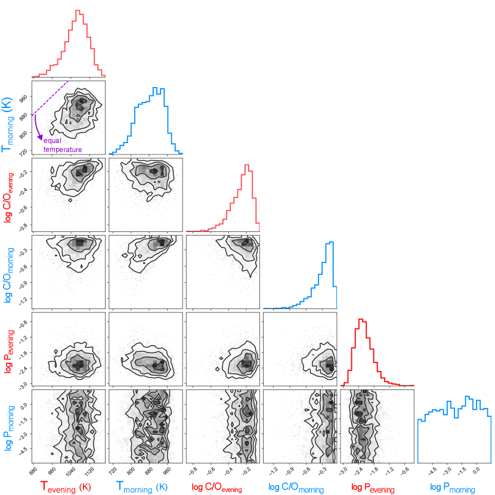

2023
1]\orgnameSpace Telescope Science Institute, \orgaddress\street3700 San Martin Drive, \cityBaltimore, \postcode21218, \stateMD, \countryUSA
2]\orgdivDepartment of Physics & Astronomy, \orgnameJohns Hopkins University\orgaddress, \cityBaltimore, \postcode21218, \stateMD, \countryUSA
3]\orgnameMax Planck Institute for Astronomy (MPIA), \orgaddress\streetKönigstuhl 17, \cityHeidelberg, \postcodeD-69117, \countryGermany
4]\orgdivDepartment of Astronomy & Astrophysics, \orgnameUniversity of Chicago, \orgaddress\cityChicago, \stateIL \countryUSA
5]\orgdivDepartment of Physics, \orgnameImperial College London, \orgaddress\streetPrince Consort Road, \cityLondon, \postcodeSW7 2AZ, \countryUK
6]\orgdivDepartment of Astronomy, \orgnameUniversity of Michigan, \orgaddress\street1085 S. University Ave., \cityAnn Arbor, \postcode48109, \stateMI, \countryUSA
7]\orgdivDepartment of Astronomy, \orgnameUniversity of Maryland,, \orgaddress\cityCollege Park, \postcode20742, \stateMD, \countryUSA
8]\orgdivDepartment of Astronomy and Steward Observatory, \orgnameUniversity of Arizona, \orgaddress\street933 North Cherry Avenue, \cityTucson, \postcode85721, \stateAZ, \countryUSA
9]\orgdivSpace Research Institute, \orgnameAustrian Academy of Sciences, \orgaddress\streetSchmiedlstrasse 6, \cityGraz, \postcodeA-8042, \countryAustria
10]\orgdivDepartment of Physics and Astronomy, Faculty of Environment, Science and Economy, \orgnameUniversity of Exeter, \orgaddress\cityExeter, \postcodeEX4 4QL, \countryUK
11]\orgdivInstitute for Theoretical Physics and Computational Physics, \orgnameGraz University of Technology, \orgaddress\streetPetersgasse 16, \cityGraz, \countryAustria
12]\orgdivInstitute of Astronomy, \orgnameKU Leuven, \orgaddress\streetCelestijnenlaan 200D, \cityLeuven, \postcode3001, \countryBelgium
13]\orgdivCentre for Exoplanet Science, \orgnameUniversity of St Andrews, \orgaddress\streetNorth Haugh, \citySt Andrews, \postcodeKY169SS, \countryUK
14]\orgdivFakultät für Mathematik, Physik und Geodäsie, \orgnameTU Graz, \orgaddress\streetPetersgasse 16, \cityGraz, \postcodeA-8010, \countryAustria
15]\orgdivObservatoire de la Côte d’Azur, \orgnameUniversité Côte d’Azur, CNRS, \orgaddress\streetLaboratoire Lagrange, \cityNice, \countryFrance
16]\orgnameJohns Hopkins APL,, \orgaddress\street11100 Johns Hopkins Rd, \cityLaurel, \postcode20723, \stateMD, \countryUSA
17]\orgdivDepartment of Astronomy & Astrophysics, \orgnameUniversity of California, Santa Cruz, \orgaddress\street1156 High St, \citySanta Cruz, \postcode95064, \stateCA, \countryUSA
18]\orgdivDepartment of Earth and Planetary Sciences, \orgnameUniversity of California, Santa Cruz, \orgaddress\street1156 High St, \citySanta Cruz, \postcode95064, \stateCA, \countryUSA
19]\orgdivCenter for Astrophysics, \orgnameHarvard & Smithsonian, \orgaddress\street60 Garden Street, \cityCambridge, \postcode02138, \stateMA, \countryUSA
20]\orgdivDepartment of Physics, \orgnameNew York University Abu Dhabi, \orgaddress\streetPO Box 129188 Abu Dhabi, \countryUAE
21]\orgdivCenter for Astro, Particle, and Planetary Physics (CAP3), \orgnameNew York University Abu Dhabi, \orgaddress\streetPO Box 129188 Abu Dhabi, \countryUAE
22]\orgdivDepartment of Physics, \orgnameUniversity of Rome “Tor Vergata”, \orgaddress\cityRome, \countryItaly
23]\orgnameINAF - Turin Astrophysical Observatory, \orgaddress\cityPino Torinese, \countryItaly
24]\orgdivUniversity Observatory Munich, \orgnameLudwig Maximilian University, \orgaddress\cityMunich, \countryGermany
25]\orgnameExzellenzcluster Origins, \orgaddress\cityGarching, \countryGermany
26]\orgdivDepartment of Earth, Atmospheric and Planetary Sciences, \orgnameMassachusetts Institute of Technology, \orgaddress\cityCambridge, \stateMA, \countryUSA
27]\orgdivKavli Institute for Astrophysics and Space Research, \orgnameMassachusetts Institute of Technology, \orgaddress\cityCambridge, \stateMA, \countryUSA
28]\orgnameInstituto de Astrofísica de Canarias (IAC), \orgaddress\cityTenerife, \countrySpain
29]\orgdivDepartment of Earth Sciences, \orgnameUniversity of California, Riverside, \orgaddress\cityRiverside, \stateCA, \countryUSA
30]\orgdivCentre for Exoplanets and Habitability, \orgnameUniversity of Warwick, \orgaddress\cityCoventry, \countryUK
31]\orgdivDepartment of Physics & Astronomy, \orgnameUniversity of Kansas, \orgaddress\cityLawrence, \stateKS \countryUSA
32]\orgdivCentre for ExoLife Sciences, \orgnameNiels Bohr Institute, \orgaddress\cityCopenhagen, \countryDenmark
33]\orgdivSchool of Earth and Space Exploration, \orgnameArizona State University, \orgaddress\cityTempe, \stateAZ \countryUSA
34]\orgdivFacultad de Ingeniería y Ciencias, \orgnameUniversidad Adolfo Ibáñez, \orgaddress\streetAv. Diagonal las Torres 2640, \citySantiago, \countryChile
35]\orgnameMillennium Institute for Astrophysics, \orgaddress\streetAv. Vicuña Mackenna 4860, \citySantiago, \countryChile
36]\orgnameData Observatory Foundation, \orgaddress\streetEliodoro Yáñez 2990, \citySantiago, \countryChile
37]\orgdivLeiden Observatory, \orgnameLeiden University, \orgaddress\streetP.O. Box 9513, 2300 RA, \cityLeiden, \countryThe Netherlands
مناطق الحد الفاصل غير المتجانسة على الكوكب الخارجي WASP-39 b
keywords:
كلمة مفتاحية 1, كلمة مفتاحية 2, كلمة مفتاحية 3, كلمة مفتاحية 4كانت مطيافية العبور خلال العقدين الماضيين تقنية عمل أساسية لتقييد الخصائص الفيزيائية والكيميائية لأغلفة الكواكب الخارجية الجوية [1, 2, 3, 4, 5]. ومن فرضياتها التقليدية الرئيسة أن الجزء من الغلاف الجوي الذي تستقصيه — أي منطقة الحد الفاصل — متجانس. غير أن عدة أعمال في العقد الماضي شككت في ذلك بالنسبة إلى الكواكب الخارجية الغازية العملاقة شديدة التشعيع والحارة ( K)، سواء تجريبيا [6, 7, 8, 9, 10] أو من خلال النمذجة ذات 3 أبعاد [11, 12, 13, 14, 15, 16, 17]. وبينما تتنبأ النماذج بفروق واضحة بين الحدين الفاصلين المسائي (من النهار إلى الليل) والصباحي (من الليل إلى النهار)، لم يُبلّغ حتى الآن عن أطياف عبور صباحية/مسائية مباشرة ضمن نطاق واسع من الأطوال الموجية لأي كوكب خارجي. وبافتراض دقة وصحة المعاملات المدارية للكوكب WASP-39 b، نبلغ هنا عن كشف حدود فاصلة غير متجانسة على الكوكب الخارجي WASP-39 b، مما يتيح لنا استرجاع طيفي العبور الصباحي والمسائي له في القريب من تحت الأحمر (m) باستخدام JWST. نرصد أعماق عبور أكبر في المساء، وهي في المتوسط أكبر من القيم الصباحية بمقدار ppm، كما أنها تُظهر سمات أكبر نوعيا من الطيف الصباحي. وتُفسَّر الأطياف على أفضل وجه بنماذج يكون فيها الحد الفاصل المسائي أسخن من الحد الفاصل الصباحي بمقدار K، مع امتلاك كلا الحدين الفاصلين نسب C/O متوافقة مع القيمة الشمسية. وتتنبأ نماذج الدوران العام (GCMs) بفروق حرارية متسقة على نحو واسع مع القيمة المذكورة أعلاه، وتشير إلى حد فاصل صباحي غائم وحد فاصل مسائي أكثر صفاء.
أُجريت دراستنا باستخدام أرصاد WASP-39 b من برنامج علم الإصدار المبكر التقديري لمدير مجتمع الكواكب الخارجية العابرة التابع لـ JWST (ERS-1366؛ الباحثون الرئيسيون: N. M. Batalha وJ. L. Bean وK. B. Stevenson) [18, 19]. لهذا الكوكب الخارجي الغازي العملاق شديد التشعيع كتلة مقدارها 0.28، ونصف قطر مقداره ، ودرجة حرارة اتزانية مقدارها 1100 K. تألفت أرصاد ERS من أربعة أحداث عبور رُصدت بأربع أدوات/أنماط مختلفة من JWST، وهي تكشف مجتمعة سمات امتصاص ذرية وجزيئية بارزة في منطقة الحد الفاصل، بما في ذلك K وH2O وCO2 وCO بل وحتى SO2، الذي عُرّف بوصفه ناتجا فوتوكيميائيا [20, 21, 22, 10, 23]. ويُجرى تحليلنا تحديدا على أرصاد NIRSpec/PRISM للكوكب WASP-39 b [10]، لأن مجموعة البيانات هذه تمتلك أوسع تغطية للأطوال الموجية وفي الوقت نفسه تعرض نظاميات أداتية ضئيلة (انظر Carter & May وآخرين، قيد المراجعة). ويتألف ذلك من رصد مدته 8.23 ساعة متمركز حول عبور 10 يوليو 2022 للكوكب WASP-39 b.
خُفّضت بيانات JWST باستخدام خط أنابيب FIREFLy [10] كما وُصف في عمل Carter & May وآخرين (قيد المراجعة). ويبيّن Carter & May وآخرون (قيد المراجعة) أيضا أن غالبية الأطوال الموجية الأقل من 2 m تعاني من تشبع الكاشف، ولا تتفق مع القياسات المنجزة باستخدام أداة NIRISS SOSS عبر نطاق مشابه من الأطوال الموجية [21]. وبما أنه لا يمكن الحصول على تحديد موثوق لعمق العبور 2 m باستخدام أرصاد NIRSpec PRISM، فإننا نختار استخدام بيانات 2-5 m فقط في تحليلنا الحالي. نلائم كل منحنى ضوء فردي معتمد على الطول الموجي عند عنصر الدقة على مستوى البكسل للأداة، مستخدمين حدا خطيا بسيطا في الزمن كنموذج للنظاميات، اتباعا لعمل [10].
أُجري تحليل منحنى ضوء العبور بثلاث منهجيات مختلفة، تنطوي كلها على افتراضات مختلفة لكنها تقدم نتائج متسقة (انظر الطرائق للتفاصيل). نعرض النتائج التي حصلنا عليها باستخدام إطار catwoman [24, 25]، وهو على الأرجح أكثر المقاربات تحفظا لأنه يتيح ملاءمة الحدين الفاصلين الصباحي والمسائي في آن واحد ضمن ملاءمة واحدة. ينمذج الإطار الحد الفاصل بوصفه نصفَي دائرة ذوي أنصاف أقطار مستقلة، مما يتيح لنا استرجاع أحجام كل من الطرفين الصباحي والمسائي على حدة بدلالة الطول الموجي من منحنيات ضوء العبور نفسها. ويُعرض مثال على ملاءمة منحنى ضوء عند m باستخدام هذه المنهجية، وكذلك باستخدام طريقة الحاجب الدائري الكلاسيكية — والمنمذجة هنا بواسطة مكتبة batman [26] — في الشكل 1. وترد مزيد من التفاصيل عن تحليل البيانات في قسم الطرائق.

تُعرض أطياف الحدين الفاصلين الصباحي والمسائي الناتجة والمستنتجة من ملاءمات منحنى الضوء بإطار catwoman في الشكل 2b. نحسب فرقا متوسطا بين الطيفين المسائي والصباحي قدره ppm، ونجد أن هذا الفرق غير متسق مع 0 عند أكثر من — أي إن الأطياف تُظهر سمات متميزة إحصائيا في الحدين الفاصلين الصباحي والمسائي. ومن الناحية النوعية، يعرض كل من الطيفين الصباحي والمسائي زيادات في عمق العبور حول سمتي H2O (m) وCO2 (m)، مع كون الأطياف الصباحية متسقة مع أطياف أكثر تسطحا إلى حد ما، وهو سلوك نرصده في جميع منهجيات ملاءمة منحنى الضوء لدينا. وهذا الكشف للفروق الطيفية من المساء إلى الصباح متين بدوره عند مستوى حتى عند احتساب أفضل الشكوك الحالية في المعاملات المدارية للكوكب WASP-39 b. غير أن النتيجة تعتمد على صحة ودقة تلك المعاملات حتى عامل مقداره بضعة أضعاف من أشرطة الخطأ الحالية المتقدمة، مما يبرز أهمية التحديد الصحيح والدقيق للمعاملات المدارية للكواكب الخارجية عند محاولة إجراء مطيافية من الصباح إلى المساء كما نفعل في عملنا (انظر الطرائق).

بعد ذلك أجرينا نمذجة أمامية واسترجاعات جوية لاستكشاف الآلية الفيزيائية الكامنة وراء الفرق بين الطيفين الصباحي والمسائي المرصودين. واستخدمنا على وجه الخصوص شبكة النماذج الأمامية ATMO [27] وإطار الاسترجاع CHIMERA المتسق كيميائيا [28] مع تعديلات تتيح لهما إجراء استدلال صباحي/مسائي في آن واحد واحتساب التغاير بين أعماق الطرفين هذه [25]. ومن ثم لائمنا طيفي WASP-39 b الصباحي والمسائي في وقت واحد لتقييد درجات حرارتهما الفردية، ونسب C/O، وخصائص السحب (انظر الطرائق للتفاصيل). والحلول الأفضل ملاءمة من كلا الإطارين متشابهة نوعيا؛ ونعرض نموذج CHIMERA الوسيط كخطين متصلين أزرق وأحمر للصباح والمساء على التوالي في الشكل 2. يعيد كلا إطارَي النمذجة قيودا متشابهة على درجتي الحرارة الصباحية والمسائية ونسب C/O. وتتقارب استرجاعات CHIMERA لدينا إلى و، وهما متسقان بعضهما مع بعض. وهذان بدورهما متسقان مع النسب المشتقة من تحليل مطيافية العبور الذي أبلغ عنه فريق ERS لأرصاد NIRSpec/PRISM [10]، أي C/O . كما أن المعدنية المشتقة لدينا (المفترضة مشتركة لكلا الطرفين) متسقة أيضا مع المعدنية الشمسية المضاعفة مرة والمبلغ عنها في ذلك العمل. ومن المثير للاهتمام أن استرجاعات CHIMERA تدعم مساء أسخن بدرجة K على نحو ملحوظ مقارنة بدرجة الحرارة الصباحية المسترجعة البالغة K؛ إذ يبلغ الفرق K، وهو ذو دلالة عند أكثر من مستوى . وهذه هي المرة الأولى التي يمكن فيها تقييد درجات الحرارة ونسب C/O من صباح ومساء كوكب خارجي. تتبع هذه النتيجة نوعيا تنبؤات GCMs ذات 3D، التي تنشأ فيها أطراف مسائية أسخن بفعل نفاثات استوائية فائقة الدوران على الكواكب الخارجية شديدة التشعيع مثل WASP-39 b [29, 14, 15, 30, 23]. إضافة إلى ذلك، وبينما يشير الاسترجاع إلى موضع مقيد نسبيا لقمة السحب في الطرف المسائي عند نحو mbar، فإن موضع قمة السحب في الطرف الصباحي غير مقيد نسبيا، مما يسمح بعدة تشكيلات ممكنة في ضوء هذه البيانات. ومن المرجح أن ذلك نتيجة للطيف الصباحي الأكثر تسطحا نسبيا مقرونا بالشكوك الكبيرة نسبيا في أطياف أطراف NIRSpec/PRISM لدينا، مما يسمح بمجال واسع من الاحتمالات لخصائص السحب الصباحية. ورغم أن ذلك يشير إلى أن معظم التغيرات المرصودة في أطياف الأطراف الصباحية/المسائية من NIRSpec/PRISM قد تُعزى إلى فروق درجة الحرارة بين الطرفين الصباحي والمسائي، فإن معالجة السحب كمصادر عتامة رمادية في الأطر المستخدمة لإجراء استدلالاتنا قد تمنعنا من تقييد خصائص السحب بدرجة أكبر في الطرفين الصباحي والمسائي للكوكب WASP-39 b.
لاستكشاف الاحتمالات التي تتيحها الهباءات والعمليات الكيميائية، قارنا الأرصاد بتنبؤات GCMs. وGCMs هي نماذج هيدروديناميكية تحاكي بنية الرياح ودرجة الحرارة 3-D في أجواء الكواكب، وتتنبأ ذاتيا بالفروق بين الحدين الفاصلين المسائي والصباحي. وتؤثر مجموعة من العمليات في فروق الحد الفاصل في الأطياف، بما في ذلك فروق درجة الحرارة المدفوعة بالدوران الجوي، وسحب التكاثف، والضبابيات الفوتوكيميائية، والكيمياء غير الاتزانية للأنواع الغازية المستحثة بالنقل (الشكل 3). ولا يستطيع أي GCM مفرد حاليا محاكاة كل هذه العمليات في آن واحد على نحو متسق ذاتيا. لذلك أدرجنا نماذج متعددة مختلفة لاستكشافها [31, 32, 33, 34].

بينما تعيد نتائج كيمياء الطور الغازي (Unified Model) إنتاج شكل السمات الطيفية جيدا عند الحد الفاصل المسائي، فإن نموذج سحب التكاثف (ExpeRT/MITgcm) يؤدي أداء أفضل نوعيا في إعادة إنتاج سعة السمات المنخفضة عند الحد الفاصل الصباحي، ولا سيما سمة CO2 المكبوتة عند 4.3 m. ويتنبأ نموذج الضباب الفوتوكيميائي بسمات ميثان كبيرة عند الطرف الصباحي وبطرف صباحي أكبر في نطاقات الميثان (المتمركزة عند 2.3 و3.3 m)، بما يتعارض مع الأرصاد. ويقود ذلك درجات حرارة أبرد عند ضغوط منخفضة في هذا GCM (SPARC/MITgcm) مقرونة بالكيمياء الاتزانية. أما الضبابيات الفوتوكيميائية نفسها فلها أثر أصغر في فروق الأطراف. ونموذج سحب التكاثف هو الوحيد الذي يتنبأ بأن أكبر فرق بين الطرفين يقع في مركز سمة CO2 (رغم أن الفرق أصغر بكثير من المرصود). وتتسق هذه النتيجة مع دراسة حديثة أخرى في فيزياء السحب الدقيقة [35]. وكشفت مقارنة مع أطياف خالية من السحب من GCM نفسه المستخدم في نموذج سحب التكاثف لدينا (غير معروضة) أن فرق الطرفين في مركز سمة CO عند 4.3 m، أي سمة CO2، تحدده فروق درجة الحرارة، أما عند أطوال موجية أخرى فتسيطر عليه السحب. ولذلك نقترح تفسيرا أوليا يتمثل في حد فاصل مسائي خال نسبيا من السحب وحد فاصل صباحي أكثر غيوما، بما يتسق مع الاستدلالات المنجزة باستخدام نماذج ATMO الأمامية واسترجاعات CHIMERA الموصوفة أعلاه. وسيلزم إجراء دراسات متابعة مفصلة تستكشف فضاء معاملات أوسع بنماذج تشكل السحب لاختبار هذا التفسير.
References
- \bibcommenthead
- [1] Seager, S. & Sasselov, D. D. Theoretical Transmission Spectra during Extrasolar Giant Planet Transits. ApJ 537, 916–921 (2000).
- [2] Hubbard, W. B. et al. Theory of Extrasolar Giant Planet Transits. ApJ 560, 413–419 (2001).
- [3] Burrows, A., Sudarsky, D. & Hubbard, W. B. A Theory for the Radius of the Transiting Giant Planet HD 209458b. ApJ 594, 545–551 (2003).
- [4] Fortney, J. J. The effect of condensates on the characterization of transiting planet atmospheres with transmission spectroscopy. MNRAS 364, 649–653 (2005).
- [5] Kreidberg, L. Exoplanet Atmosphere Measurements from Transmission Spectroscopy and Other Planet Star Combined Light Observations. In Deeg, H. J. & Belmonte, J. A. (eds.) Handbook of Exoplanets, 100 (2018).
- [6] Louden, T. & Wheatley, P. J. Spatially Resolved Eastward Winds and Rotation of HD 189733b. ApJ 814, L24 (2015).
- [7] Ehrenreich, D. et al. Nightside condensation of iron in an ultrahot giant exoplanet. Nature 580, 597–601 (2020).
- [8] Prinoth, B. et al. Titanium oxide and chemical inhomogeneity in the atmosphere of the exoplanet WASP-189 b. Nature Astronomy 6, 449–457 (2022).
- [9] Kesseli, A. Y., Snellen, I. A. G., Casasayas-Barris, N., Mollière, P. & Sánchez-López, A. An Atomic Spectral Survey of WASP-76b: Resolving Chemical Gradients and Asymmetries. AJ 163, 107 (2022).
- [10] Rustamkulov, Z. et al. Early Release Science of the exoplanet WASP-39b with JWST NIRSpec PRISM. Nature 614, 659–663 (2023).
- [11] Fortney, J. J. et al. Transmission Spectra of Three-Dimensional Hot Jupiter Model Atmospheres. ApJ 709, 1396–1406 (2010).
- [12] Dobbs-Dixon, I., Agol, E. & Burrows, A. The Impact of Circumplantary Jets on Transit Spectra and Timing Offsets for Hot Jupiters. ApJ 751, 87 (2012).
- [13] Line, M. R. & Parmentier, V. The Influence of Nonuniform Cloud Cover on Transit Transmission Spectra. ApJ 820, 78 (2016).
- [14] Kempton, E. M. R., Bean, J. L. & Parmentier, V. An Observational Diagnostic for Distinguishing between Clouds and Haze in Hot Exoplanet Atmospheres. ApJ 845, L20 (2017).
- [15] Powell, D. et al. Transit Signatures of Inhomogeneous Clouds on Hot Jupiters: Insights from Microphysical Cloud Modeling. ApJ 887, 170 (2019).
- [16] Helling, C. et al. Mineral cloud and hydrocarbon haze particles in the atmosphere of the hot Jupiter JWST target WASP-43b. A&A 641, A178 (2020).
- [17] MacDonald, R. J., Goyal, J. M. & Lewis, N. K. Why Is it So Cold in Here? Explaining the Cold Temperatures Retrieved from Transmission Spectra of Exoplanet Atmospheres. ApJ 893, L43 (2020).
- [18] Stevenson, K. B. et al. Transiting Exoplanet Studies and Community Targets for JWST’s Early Release Science Program. PASP 128, 094401 (2016).
- [19] Bean, J. L. et al. The Transiting Exoplanet Community Early Release Science Program for JWST. PASP 130, 114402 (2018).
- [20] Alderson, L. et al. Early Release Science of the exoplanet WASP-39b with JWST NIRSpec G395H. Nature 614, 664–669 (2023).
- [21] Feinstein, A. D. et al. Early Release Science of the exoplanet WASP-39b with JWST NIRISS. Nature 614, 670–675 (2023).
- [22] Ahrer, E.-M. et al. Early Release Science of the exoplanet WASP-39b with JWST NIRCam. Nature 614, 653–658 (2023).
- [23] Tsai, S.-M. et al. Photochemically produced SO2 in the atmosphere of WASP-39b. Nature 617, 483–487 (2023).
- [24] Jones, K. & Espinoza, N. catwoman: A transit modelling Python package for asymmetric light curves. The Journal of Open Source Software 5, 2382 (2020).
- [25] Espinoza, N. & Jones, K. Constraining Mornings and Evenings on Distant Worlds: A new Semianalytical Approach and Prospects with Transmission Spectroscopy. AJ 162, 165 (2021).
- [26] Kreidberg, L. batman: BAsic Transit Model cAlculatioN in Python. PASP 127, 1161 (2015).
- [27] Goyal, J. M. et al. A library of ATMO forward model transmission spectra for hot Jupiter exoplanets. MNRAS 474, 5158–5185 (2018).
- [28] Line, M. R. et al. A Systematic Retrieval Analysis of Secondary Eclipse Spectra. I. A Comparison of Atmospheric Retrieval Techniques. ApJ 775, 137 (2013).
- [29] Kataria, T. et al. The Atmospheric Circulation of a Nine-hot-Jupiter Sample: Probing Circulation and Chemistry over a Wide Phase Space. ApJ 821, 9 (2016).
- [30] Lee, E. K. H., Tsai, S.-M., Hammond, M. & Tan, X. A mini-chemical scheme with net reactions for 3D general circulation models. II. 3D thermochemical modelling of WASP-39b and HD 189733b. A&A 672, A110 (2023).
- [31] Carone, L., Lewis, D. A., Samra, D., Schneider, A. D. & Helling, C. WASP-39b: exo-Saturn with patchy cloud composition, moderate metallicity, and underdepleted S/O. arXiv e-prints arXiv:2301.08492 (2023).
- [32] Helling, C. et al. Exoplanet weather and climate regimes with clouds and thermal ionospheres. A model grid study in support of large-scale observational campaigns. A&A 671, A122 (2023).
- [33] Zamyatina, M. et al. Observability of signatures of transport-induced chemistry in clear atmospheres of hot gas giant exoplanets. MNRAS 519, 3129–3153 (2023).
- [34] Steinrueck, M. E. et al. 3D simulations of photochemical hazes in the atmosphere of hot Jupiter HD 189733b. MNRAS 504, 2783–2799 (2021).
- [35] Arfaux, A. & Lavvas, P. Coupling haze and cloud microphysics in WASP-39b’s atmosphere based on JWST observations. arXiv e-prints arXiv:2311.07365 (2023).
الطرائق
مجموعة البيانات
نستخدم في هذا العمل مجموعة بيانات JWST NIRSpec PRISM التي حُصل عليها للكوكب WASP-39 b بوصفها جزءا من برنامج ERS التقديري لمدير مجتمع الكواكب الخارجية العابرة التابع لـ JWST [18, 19] (ERS 1366؛ الباحثون الرئيسيون: N. M. Batalha وJ. L. Bean وK. B. Stevenson)، والتي قُدمت سابقا في عمل [10]. اخترنا هذه المجموعة من البيانات لاستكشاف الصباح/المساء في WASP-39 b لأنها، من بين مجموعات بيانات ERS الأربع، تمتلك أوسع تغطية للأطوال الموجية وقدمت تحديات طفيفة نسبيا في تحليل بيانات منحنى الضوء — وهو الأسلوب الذي نحصل به في هذا العمل على قيود على صباح ومساء الكوكب الخارجي.
تحليل البيانات
نستخدم اختزال مجموعة البيانات بخط أنابيب FIREFLy كما عُرض في [1] و[10]، واستُخدم لاحقا في Carter & May وآخرين (قيد المراجعة). وباختصار، يُجري خط الأنابيب معايرات أولية باستخدام الحزمة jwst، مضيفا إزالة تخطيط ضوضاء 1/ في مرحلة المجموعات قبل مرحلة ملاءمة المنحدر. ثم ينظف السلسلة الزمنية من البكسلات السيئة والأشعة الكونية، ويثبت انزياح كل تكامل لتصحيح اهتزاز مترابط على مستوى جزء من الألف من البكسل في الأثر الطيفي. واتباعا لـ Carter & May وآخرين (قيد المراجعة)، الذين يتعمقون في الآثار الضارة للتشبع، نختار استخدام منطقة الطيف غير المشبعة 2.0-5.0 m فقط بسبب ضوضائها النظامية الضعيفة وطيف عبورها القابل لإعادة الإنتاج. وتُظهر منطقة 0.7 – 2.0 m انحرافات كبيرة نسبة إلى طيف NIRISS-SOSS غير المشبع [21]، وتزداد في المقدار باتجاه مركز التشبع عند 1.3 m. كما تعاني المنطقة من نسبة إشارة إلى ضوضاء أدنى بكثير لأن عددا أقل من المجموعات متاح للاستخدام هناك. نستبعد هذه المنطقة لتجنب احتمال استخلاص استنتاجات زائفة عن طبيعة الكوكب. ونلاحظ أن طيف WASP-39 b عند 2.0-5.0 m يمتلك سعـات سمات أكبر نسبيا تمتد عبر أنواع كيميائية أكثر من منطقة NIR. وتوائم القياسات الطيفية الضوئية لـ PRISM جيدا بنزعة خطية تتغير مع الطول الموجي ولا تعرض أي ضوضاء نظامية أخرى ذات شأن.
تحليل منحنى ضوء العبور
المعاملات الفيزيائية والمدارية للنظام. المعاملات الفيزيائية
والمدارية للكوكب WASP-39 b المستخدمة في هذا العمل هي تلك التي أبلغ عنها
Carter & May وآخرون (قيد المراجعة). وثُبتت هذه المعاملات في ملاءمات
منحنى الضوء المعتمدة على الطول الموجي لدينا. وعلى وجه الخصوص، ثبتنا الفترة عند يوم، ونصف المحور الرئيسي
المقيس عند ، ومعامل الاصطدام عند ،
ووضعنا زمن منتصف العبور لـ NIRSpec/PRISM عند يوم.
تحليل منحنى الضوء المعتمد على الطول الموجي. من أجل استكشاف الدليل على بصمات صباحية/مسائية في منحنيات ضوء NIRSpec/PRISM المعتمدة على الطول الموجي، قررنا إجراء تحليلات وفق ثلاث مقاربات مختلفة:
-
1.
ملاءمات منحنى الضوء باستخدام catwoman. في هذه المقاربة أجرينا ملاءمات لمنحنى الضوء على منحنيات الضوء المعتمدة على الطول الموجي باستخدام إطار catwoman المقدم في [25, 2]. وينمذج هذا الإطار الجسم العابر أمام النجم بوصفه نصفَي دائرة متراكبين، يمثل كل منهما عمق العبور الفعال من الحدين الفاصلين الصباحي والمسائي للكوكب WASP-39 b. أجرينا مجموعتين من الملاءمات باستخدام هذه المقاربة، قادهما المؤلفان المشاركان MM وNE، على التوالي، وكلتاهما تضبط زاوية دوران الطرفين عند 90 درجة. وأُجريت ملاءمات NE باستخدام catwoman بتبني معاملات إظلام الطرف المأخوذة من حزمة limb-darkening [3] بوصفها قبليات، وباستخدام نماذج ATLAS ذات المعاملات النجمية نفسها لـ WASP-39، وتمريرها عبر خوارزمية SPAM الخاصة بـ [4] للحصول على التقديرات النهائية لمعاملات إظلام الطرف. أما ملاءمات MM فثبتت معاملات إظلام الطرف عند تلك المحصلة من مكتبة ExoCTK [5]، والمستخرجة أيضا من نماذج ATLAS ذات المعاملات النجمية نفسها لـ WASP-39. واستخدمت كلتا ملاءمتي منحنى الضوء قانون إظلام طرف تربيعيا. واستخدمت ملاءمات NE توصيف إظلام الطرف في [6]، مع قبلية تتبع توزيعا طبيعيا مبتورا متمركزا حول المعاملات النظرية المحولة ، وبحدود موضوعة بين 0 و1 لكل منها. وضُبط الانحراف المعياري لذلك التوزيع القبلي عند 0.1 لكلا المعاملين المحولين استنادا إلى نتائج [7] التي وجدت أن هو أكبر إزاحة بين معاملات إظلام الطرف التربيعية والتجريبية عند مقارنة المعاملات النظرية بتلك المحصلة عبر قياس ضوئي دقيق من TESS. كما تضمنت كلتا الملاءمتين ميلا زمنيا بوصفه معاملا حرا لنمذجة الميل الممتد طوال الزيارة والمشاهد في بيانات NIRSpec/PRISM في [10]، إلى جانب إزاحة تدفق خط أساس. وتضم ملاءمات NE إضافة إلى ذلك حد اهتزاز يضاف تربيعيا إلى أشرطة خطأ منحنى ضوء NIRSpec/PRISM. وفي المجمل، تضمنت ملاءمات MM 4 معاملات حرة (2 نصفَي قطر لنصفي الدائرة، وميل، وإزاحة تدفق خط أساس) لكل منحنى ضوء معتمد على الطول الموجي، في حين تضمنت ملاءمات NE 7 معاملات حرة (مثل MM مع إضافة 2 معاملات إظلام طرف وحد اهتزاز).
-
2.
ملاءمات منحنى الضوء في الدخول/الخروج (Tiberius). في هذه المقاربة، أجرينا ملاءمات منحنى ضوء العبور على منحنيات الضوء المعتمدة على الطول الموجي باستخدام إطار batman [8] عبر مكتبة Tiberius [9, 10]، مع ملاءمة نصف الدخول (حيث تُتوقع مساهمات أساسا من الطرف الصباحي) ونصف الخروج (حيث تُتوقع مساهمات أساسا من الطرف المسائي) كل على حدة. ولإيجاد نقاط التماس لحدث العبور، وُلّد منحنى ضوء عبور بالمعاملات المدارية الموصوفة أعلاه، وضُبط إظلام الطرف عند الصفر لإيجاد نقاط عدم الاستمرارية في منحنى الضوء التي تحدد نقاط التماس 1 (بداية الدخول)، و2 (نهاية الدخول)، و3 (بداية الخروج)، و4 (نهاية الخروج). وبذلك، اشتُقت نقاط تماس نصف الدخول (نقطة التماس 1.5 — متوسط التماس 1 و2) ونصف الخروج (نقطة التماس 3.5 — متوسط التماس 3 و4). ثم لُوئمت منحنيات ضوء نصف الدخول (جميع نقاط البيانات السابقة لنقطة التماس 1.5 واللاحقة لنقطة التماس 4) ونصف الخروج (جميع نقاط البيانات اللاحقة لنقطة التماس 3.5 والسابقة لنقطة التماس 1) على النحو الآتي. أولا، يُلائم منحنى الضوء الكامل لكل حاوية طول موجي، بنموذج يلائم ميلا وإزاحة تدفق خط أساس ونسبة نصف قطر الكوكب إلى النجم والحد الخطي من قانون إظلام طرف تربيعي — مع تثبيت الحد التربيعي عند معاملات إظلام الطرف المحصلة من نماذج 3D في مكتبة Exo-TiC [11]. ثم تُلائم منحنيات ضوء نصف الدخول ونصف الخروج بترك جميع المعاملات مثبتة عند أفضل معاملات الملاءمة المستخلصة من ملاءمة العبور الكامل، على أن يكون المعامل الحر الوحيد هو نسب أنصاف أقطار الكوكب إلى النجم. وتحدد هذه النسب عمقَي العبور الصباحي والمسائي، على التوالي، باستخدام هذه المنهجية.
-
3.
زمن منتصف العبور المعتمد على الطول الموجي. طيف زمن العبور حساس لانزياحات مركز عتامة من الرتبة 0 والمعتمدة على الطول الموجي على طول مدار الكوكب، وهي انزياحات تفرضها اللاتجانسية المكانية في تركيب حده الفاصل ودرجة حرارته [12, 12, 15, 25]. ويُحدث حد فاصل لاحق أسخن وأكثر امتدادا انحرافا موجبا في زمن العبور النسبي ()، إذ يبدو الكوكب عابرا في وقت متأخر قليلا بسبب الانتفاخ الطفيف للطرف اللاحق في سطحه . وبالمثل، فإن طيفا لحد فاصل قائد أبرد، أو طيفا ذا سحب رمادية تخمد السمات، يُحدث انحرافا موجبا أحادي اللون في طيف زمن العبور. وتتدرج سعة الأثر عكسيا مع سرعة الكوكب المدارية ومعامل الاصطدام، ومع فرق متوسط ارتفاع حبل العبور لكل حد فاصل. وطيف الزمن المعروض في شكل البيانات الموسعة 1c هو نتيجة ملاءمة مربعات صغرى بطريقة Levenburg-Marquardt للقياسات الطيفية الضوئية، مع حاويات أعرض من تلك المستخدمة في [10]. وفي كل قناة طول موجي نثبت معاملات مدار WASP-39 b عند قيم Carter & May وآخرين (قيد المراجعة)، بينما نلائم معاملات إظلام الطرف وعمق العبور وزمن مركز العبور باستخدام batman [8]. نجد أن البصمة الزمنية متينة تجاه اختيار المرء للمعاملات الملائمة والمثبتة، مما ينتج فروقا مقدارها . وتُكشف انحرافات موجبة ذات دلالة إحصائية عند أطوال موجية تقابل السمات الطيفية لـ H2O ( 2-3.5 m)، وH2S ( 3.78 m)، وSO2 ( 4.06 m)، وCO2 ( 4.2-4.5 m).

تُعرض نتائج المنهجيات الموصوفة أعلاه في شكل البيانات الموسعة 1. ويبدو أن كلتا مقاربتي catwoman (NE، MM) ومقاربة نصف الدخول/الخروج متسقة بعضها مع بعض ضمن أشرطة الخطأ، وكذلك استنادا إلى البنية العامة للأطياف الصباحية والمسائية الناتجة. وبوجه عام، يبدو أن السمات الطيفية الصباحية لـ H2O وCO2 مخمدة مقارنة بالسمات نفسها المرصودة في المساء، وهي صورة تتسق مع التحليل المنجز على أزمنة العبور المعتمدة على الطول الموجي، حيث تُرصد أكبر الإزاحات لسمات H2O وCO2، مع أن الجزيء الأخير يُرى بدلالة أدنى.
غير أن دلالة
تخميد السمات الطيفية بين الصباح والمساء أقل وضوحا في تحليل منحنى الضوء الخاص بـ NE. فهذه المقاربة الأخيرة تنتج
أكبر أخطاء على الأطياف الصباحية/المسائية، ويرجع ذلك إلى
أن هذه المقاربة تفترض قدرا من الجهل بشأن معاملات إظلام الطرف. وكما نبيّن أدناه من خلال تجارب منحنى الضوء المنجزة
لدراسة متانة أطيافنا الصباحية/المسائية تجاه الافتراضات المتعلقة
بمعاملات العبور، نعد هذه المقاربة الأكثر تحفظا من حيث
اشتقاق الفروق بين الطرفين الصباحي والمسائي، لأن انحرافات
طفيفة جدا عن معاملات إظلام الطرف الحقيقية “الكامنة”
يمكن أن تولد فروقا كاذبة بين الأطياف الصباحية والمسائية،
وهو ما قد يُفسَّر خطأ بوصفه أثرا فيزيائيا فلكيا في
غلاف الكوكب الخارجي الجوي. ولهذا السبب قررنا إجراء الاستدلالات على مقاربة catwoman الخاصة بـ NE لعرض/تفسير
الأطياف الصباحية/المسائية في النص الرئيس.
متانة الأطياف الصباحية/المسائية تجاه الافتراضات المتعلقة بمعاملات العبور. حددت أعمال سابقة درست إمكانية استخراج أطياف صباحية ومسائية مباشرة من منحنيات ضوء العبور عددا من التشابكات المحتملة التي قد تنشأ
والتي يمكن أن تؤثر في الأطياف المشتقة [12, 15, 25]. وعلى وجه الخصوص، حُدد التشابك بين
زمن مركز العبور ولاتناظرات الطرف في أعمال سابقة بوصفه أكبر مصدر يمنع إجراء هذه
الكشوف في بيانات حقيقية، ويكون استخدام منحنيات عبور دقيقة معتمدة على الطول الموجي
مثل تلك المستخدمة في هذا العمل حاسما لرفعه [12, 15]. إضافة إلى ذلك، ورغم أن إظلام الطرف ثبت أنه
ينقص قليلا قابلية كشف لاتناظرات الطرف في البيانات المحاكاة
[25]، فإن أي انحيازات تستحثها تثبيت تلك المعاملات، على حد
علمنا، لم تُدرس تفصيلا في الأدبيات. وأخيرا، ثبت أن المدارات اللامركزية يمكن أن تولد أيضا منحنيات ضوء عبور غير متناظرة [13, 14]. ومن ثم فإن استخدام افتراض خاطئ عن لامركزية المدار قد يؤدي بدوره إلى انحيازات في الأطياف الصباحية/المسائية
المستخرجة بقياس لاتناظرات منحنى الضوء. أجرينا تجارب لدراسة مصادر الخطأ النظامية الثلاثة هذه بغرض
تكميم أثرها في الأطياف الصباحية/المسائية التي نبلغ عنها.
المتانة في غياب لاتناظرات الطرف. من أجل تعريف
اختبار متانة خط أساس صفري لمنهجية catwoman
المستخدمة في هذا العمل، حاكينا منحنيات ضوء عبور مشوشة باستخدام
batman كانت لها معاملات العبور المدخلة نفسها مثل
معاملات منحنى الضوء الأبيض المستخدمة في ملاءماتنا (أي تلك من
Carter & May وآخرين، قيد المراجعة)، وخصائص الضوضاء نفسها للبيانات الحقيقية
(بما في ذلك الميل الممتد طوال الزيارة)، وأعماق عبور
تتغير بدلالة الطول الموجي مطابقة لطيف العبور
المعروض في [10]. ثم لائمنا تلك المنحنيات الضوئية بنموذج catwoman، بالمقاربة نفسها الموصوفة
أعلاه لملاءمات منحنى الضوء catwoman الخاصة بـ NE. وكما هو متوقع، وجدنا
أن الأطياف الصباحية
والمسائية المستخرجة متسقة بعضها مع بعض، وتنتج فرقا صفريا
بينها. وتُعرض نتائج تلك المحاكاة في
شكل البيانات الموسعة 3، اللوحة a.
المتانة تجاه زمن مركز العبور. لفحص متانة أطيافنا تجاه استخدام زمن مركز عبور مثبت
(مستخلص من عمل Carter & May وآخرين، قيد المراجعة)،
أجرينا المحاكاة نفسها الموصوفة في الفقرة السابقة؛ إلا أننا استخدمنا زمن مركز عبور أكبر بمقدار من ذلك المبلغ عنه في عمل Carter & May وآخرين (قيد المراجعة)، وهو ما يعادل إزاحة زمنية مقدارها 3.4 ثانية. ثم لائمنا
منحنيات الضوء تلك بنموذج catwoman استخدم زمن مركز العبور
كمعامل مثبت من دون هذه الإزاحة. وجدنا أن مثل هذه الإزاحة في
التوقيت لا تترك أثرا قابلا للقياس في طيف العبور الصباحي/المسائي لدينا، إذ كان الفرق بينهما متسقا مع الصفر. وتُعرض نتائج تلك المحاكاة في
شكل البيانات الموسعة 3، اللوحة b.
المتانة تجاه معاملات إظلام الطرف. أجرينا تجربة مشابهة لتلك الموصوفة في الفقرة السابقة، لكننا عدلنا معاملات إظلام الطرف المدخلة بحيث تكون مزاحة بمقدار 0.01 عن
القيم المثبتة، والتي حصلنا عليها باتباع المنهجية
الموصوفة أعلاه لمقاربة ملاءمة منحنى ضوء العبور باستخدام catwoman الخاصة بـ NE. ثم لائمنا منحنيات الضوء تلك، لكننا ثبتنا معاملات إظلام الطرف
في ملاءمتنا عند القيم غير المزاحة.
وجدنا أن هذه الإزاحات الصغيرة جدا في معاملات إظلام الطرف
كان لها أثر قابل للقياس في الأطياف الصباحية/المسائية المسترجعة، إذ
ولدت فروقا صباحية/مسائية قابلة للقياس من رتبة
ppm عند تثبيتها في إجراء ملاءمة منحنى الضوء عند قيم خاطئة؛
وتُعرض نتائج هذه المحاكاة في شكل البيانات الموسعة
3، اللوحة c.. أما التجربة نفسها، لكن
مع وضع قبليات واسعة لهذه المعاملات كما وُصف في إجراء ملاءمة منحنى الضوء
catwoman الخاص بـ NE أعلاه، فتتيح
استرداد الفرق الصفري المدخل بين الطيفين المسائي والصباحي
(غير معروض). وتبرز هذه التجارب أنه، رغم إمكانية الحصول على فروق طيفية صباحية/مسائية نسبية
بتثبيت معاملات إظلام الطرف حتى لو كانت
خاطئة قليلا، فقد لا يكون من الممكن عموما استخراج فروق طيفية مطلقة
بمتانة. وحتى عند السعي للحصول على فروق طيفية صباحية/مسائية نسبية، قد تكون إزاحات إظلام الطرف في الواقع معتمدة على الطول الموجي، ومن ثم قد تولد إشارات و/أو سمات طيفية زائفة في أطياف الطرفين. وكان هذا أحد الأسباب الرئيسة
التي جعلتنا نقرر عرض النتائج المستخلصة من إجراء ملاءمة منحنى الضوء
catwoman الخاص بـ NE في النص الرئيس، إذ
يسمح لمعاملات إظلام الطرف بأن تكون مزاحة بدرجة ملحوظة عن
حسابات النماذج النظرية المدخلة. وتُعرض معاملات إظلام الطرف
المسترجعة عند إجراء ملاءمات catwoman باستخدام مقاربة NE
لبيانات NIRSpec/PRISM الحقيقية لدينا في شكل البيانات الموسعة 4.
وتتراوح الأخطاء على معاملات بين ، بينما تتراوح الأخطاء على معاملات
بين . وبالتالي فإن إزاحات معاملات إظلام الطرف من
رتبة مسموح بها فعلا من البيانات، وهي محتملة بوجه خاص
في نطاق 2.5-4.5 m للمعامل الخطي ()
لقانون التربيع، حيث تنحرف معاملات إظلام الطرف المسترجعة
أكثر ما يكون عن تنبؤات النموذج النظري.
المتانة تجاه اللامركزية. كررنا تجربة مشابهة للتجارب الموصوفة أعلاه، لكننا هذه المرة وضعنا كنموذج batman مدخل مدارا لامركزيا بمعاملات متسقة عند مع أفضل معاملات الملاءمة المعروضة في Carter & May وآخرين (قيد المراجعة)، وهو ما يقابل و درجة. وتُظهر محاكاتنا المعروضة في شكل البيانات الموسعة 3، اللوحة d.، أن هذه المجموعة من القيم يمكنها فعلا توليد إزاحات بين الطرفين الصباحي والمسائي، جاعلة أطياف الطرف الصباحي أكبر من أطياف الطرف المسائي. واستكشفنا مدى (، ) المسموح به من التحليل المعروض في Carter & May وآخرين (قيد المراجعة)، ووجدنا أن أثر هذه المعاملات يعمل دائما في الاتجاه نفسه بالنسبة إلى أرصاد عبور WASP-39 b المحللة في هذا العمل: فالقيم المسموح بها لـ و في التوزيع الخلفي كلها يمكن أن تولد أعماقا صباحية أكبر من الأعماق المسائية. أما في الأطياف الصباحية/المسائية المبلغ عنها في هذا العمل فنرصد العكس: أعماقا مسائية أكبر من الأعماق الصباحية. وهذا يشير إلى أن الفرق المطلق الذي نرصده بين الطيفين الصباحي والمسائي في أرصاد NIRSpec/PRISM يمثل، في أسوأ الأحوال، حدودا دنيا للفرق المطلق الفعلي في العمق بين الطرفين الصباحي والمسائي.
ومن المهم أن نلاحظ، مع ذلك، أن مجموعة قيم (، ) كتلك المستخدمة في تجربتنا يرجح أنها كبيرة على نحو غير واقعي، لأن أرصاد الكسوف الثانوي تقيد [15]، وهو ما سيرفض مثل هذه التركيبة من (، ) عند أكثر من 10-. وبالنظر إلى أن لامركزية WASP-39 b متسقة مع الصفر في ضوء بيانات من مصادر مختلفة، وهذا بدوره متسق مع مقاييس زمنية صغيرة نسبيا لتدوير مدار الكوكب بالنظر إلى أن WASP-39 نجم عمره Gyr [16]، فإننا نقترح أن إزاحات اللامركزية أثر ثانوي نسبيا لهذا النظام.
ولاختبار كيف تؤثر أحدث القيود على خصائص النظام في كشفنا للفروق الصباحية والمسائية في طيف عبور WASP-39 b المعروض في هذا العمل، قررنا إعادة تشغيل ملاءمة منحنى ضوء أبيض مشابهة لتلك في Carter & May وآخرين (قيد المراجعة) لكن بافتراض مدار لامركزي، ثم ترك الخلفيات الخاصة بمعاملات العبور لهذه الملاءمة تطفو كقبليات في ملاءمات منحنى الضوء المعتمدة على الطول الموجي لدينا بدلا من تثبيت تلك المعاملات كما فُعل في تحليلنا الاسمي. أُجريت ملاءمة منحنى الضوء الأبيض الجديدة هذه بقبليتين إضافيتين: (1) القيد على البالغ [15] و(2) قبلية على الكثافة النجمية لـ WASP-39 b حُصل عليها عبر المنهجية المبينة في [17] و[18]. تحصل هذه المنهجية الأخيرة أولا على معاملات الغلاف الجوي النجمي من أطياف عالية الدقة، نستخدم لها متوسط 3 أطياف FEROS عالية الدقة متاحة علنا من PID 098.A-9007(A) حُصل عليها في فبراير 12، 2017، واختُزلت بخط أنابيب CERES [19]. ويُعطى هذا الطيف مدخلا إلى الشيفرة ZASPE [20]، التي تُستخلص بها مجموعة أولية من معاملات الغلاف الجوي النجمي. ثم تُدمج قياسات Gaia ( و و) وقياسات 2MASS ( و و) الضوئية مع المسافات المشتقة من Gaia ( pc؛ والمحصلة عبر اختلافات المنظر باستخدام المنهجية الموصوفة في [21]) للحصول على معاملات نجمية أساسية ومطلقة باستخدام متساويات العمر PARSEC [22]، مع استخدام معاملات الغلاف الجوي النجمي المشتقة طيفيا كقبليات. ويعيد هذا الإجراء التكراري جميع المعاملات النجمية الأساسية للنجم. وعلى وجه الخصوص، بالنسبة إلى WASP-39 b نجد و، وهو ما يعطي بدوره كثافة نجمية مقدارها kg/m3. ونلاحظ أن تلك المعاملات النجمية المقدرة متسقة مع تلك المعروضة في ورقة الاكتشاف لـ [16]، وإن كانت أدق منها.
وتعطي ملاءمة منحنى الضوء الأبيض الجديدة هذه معاملات خلفية متسقة بدورها كلها مع
تلك المبلغ عنها في Carter & May وآخرين (قيد المراجعة)؛ وبخاصة مع خلفية كثافة نجمية
مقدارها kg/m3، متسقة عند 1-سيغما مع القيمة kg/m3 المعروضة في ذلك العمل (ومقيدة أكثر بكثير من قبلية الكثافة النجمية لدينا، مما يبين أن هذه القيمة
لا تهيمن عليها). كما تضع الملاءمة حدا على لامركزية WASP-39 b مقداره بمصداقية 99% (؛ )؛ ولا يزال نموذج دائري مفضلا عبر
الدليل البايزي. وكما وُصف أعلاه، نستخدم بعد ذلك التوزيعات الخلفية لجميع معاملات العبور من ملاءمة النموذج اللامركزي هذه كقبليات لكل ملاءمة منحنى ضوء معتمدة على الطول الموجي باستخدام منهجية NE في catwoman الموصوفة أعلاه. نجد طيف عبور صباحيا ومسائيا
مشابها جدا لذلك المعروض في الشكل 2، وإن كان
بأشرطة خطأ أكبر؛ وهي زيادة تهيمن عليها لايقينية اللامركزية. ويبرز ذلك أهمية امتلاك معاملات مدارية عالية الدقة للأنظمة عند إجراء كشوف لاتناظرات الطرف، ولا سيما قيود جيدة على اللامركزيات وحجج الحضيض. ورغم
هذه الأشرطة الخطئية المتضخمة، ما زلنا نجد فرقا متوسطا في العمق من المساء إلى الصباح
مقداره ppm — وهو كشف بمقدار 3-سيغما لأثر العمق من المساء إلى الصباح
المعروض في هذا العمل حتى في هذا السيناريو الأسوأ. ومن أجل استكشاف أثر تقديرنا للمعاملات المدارية في كشفنا للحدود الفاصلة غير المتجانسة على WASP-39 b على نحو أوسع، أجرينا تجارب كبّرنا فيها أشرطة الخطأ على المعاملات المدارية اصطناعيا بمقدار 3 و5 و10 أضعاف، لكل من حالتي المدار الدائري (أي ) واللامركزي (أي و حرتان)، وقارنا متوسط الأعماق من المساء إلى الصباح لكل حالة. وقارنا هذه الفروق عبر نطاق الطول الموجي بأكمله وللأطوال الموجية فوق 4 ، حيث نرى أكبر الانحرافات في الأعماق من المساء إلى الصباح. وتُعرض نتائج تجربتنا في شكل البيانات الموسعة 2. وكما يمكن ملاحظته، بالنسبة إلى حالتنا الدائرية، فإن تضخيمات الخطأ حتى 5 مرات أشرطة الخطأ المبلغ عنها لا تزال تدعم كشفنا للحدود الفاصلة غير المتجانسة، بينما بالنسبة إلى الحالة اللامركزية لا تدعم تضخيمات الخطأ حتى 3 مرات هذا الكشف إلا عند أطوال موجية فوق 4 . وتبرز هذه التجارب اعتماد كشف هذا الأثر على صحة ودقة المعاملات المدارية لـ WASP-39 b — وهو ما قد ينطبق أيضا على كشف الأثر في كواكب خارجية أخرى. إلا أننا نلاحظ أن تلك التجارب تقدم حدا أعلى
للايقينية في فرق العمق من المساء إلى الصباح، لأن اللامركزية
ينبغي أن تكون مستقلة عن الطول الموجي. أما في حالتنا فنحن نلائم اللامركزية
على نحو مستقل في كل حاوية طول موجي فردية.

المتانة تجاه لاتناظرات الطرف في الضوء الأبيض. أجرى
عمل Carter & May وآخرين (قيد المراجعة) تحليلات منحنى ضوء أبيض
بافتراض نموذج منحنى ضوء عبور batman. ونترك معاملات العبور
مثبتة في معظم ملاءمات منحنى الضوء المعتمدة على الطول الموجي لبيانات
NIRSpec/PRISM. غير أنه بالنظر إلى كشفنا لاتناظرات الطرف في هذه المجموعة من البيانات،
قد يُقترح أن المعاملات الخلفية في Carter & May وآخرين
(قيد المراجعة) قد تكون منحازة لأن نماذج catwoman لم تُستخدم لتحليل
بيانات JWST. أجرينا مثل هذه الملاءمات مع ترك جميع قبليات بقية
المعاملات دون تغيير وكما وُصفت في Carter & May وآخرين
(قيد المراجعة)، لكن مع السماح لبيانات JWST بأن تمتلك أطرافا غير متناظرة عبر
نموذج catwoman. وجدنا أن جميع معاملات العبور اتفقت ضمن
مقارنة بالقيم المبلغ عنها في Carter & May وآخرين (قيد المراجعة)؛
غير أن اللايقينيات في زمن مركز العبور واللامركزية والكثافة النجمية
أكبر بعامل و و في ملاءمات catwoman. وعند احتساب القيود التي يفرضها الكسوف الثانوي لـ WASP-39 b
الموصوف في الفقرة السابقة، تكون جميع اللايقينيات باستثناء
لايقينية الكثافة النجمية متسقة بين التحليلين. ويشير هذا التحليل
إلى أن عدم استخدام عمل Carter & May وآخرين (قيد المراجعة)
لنماذج catwoman في ملاءمة منحنيات عبور JWST ليس
اعتبارا مهما بوجه خاص في حالة WASP-39 b، ولا سيما عندما
يتعلق الأمر بالقيود على اللامركزية وزمن مركز العبور المستخدمة
في ملاءماتنا المعتمدة على الطول الموجي.
متانة الأطياف الصباحية/المسائية تجاه دوران الكوكب. يحذف الإطار والنتائج المعروضة أعلاه أي آثار من دوران الكوكب
أثناء العبور. وإذا كان ذلك مهما، فقد تختلف الأطياف المرصودة في بداية حدث العبور تماما عن الأطياف المرصودة في نهايته. وبافتراض أن الكوكب الخارجي مقيد مديا، فإن مقدار الدوران الذي يخضع له الكوكب (فترة يوم) على المقاييس الزمنية لحدث العبور ( ساعات) هو من رتبة درجات؛ وتشير حسابات [23] إلى أن ذلك قد يكون أصغر من أن يُكشف عنه أي بصمات ناجمة عن دوران الكوكب. ولاستكشاف هذه القيود في بياناتنا، قررنا دراسته بإجراء تحليل منحنى الضوء نفسه المبين أعلاه، لكن مع اعتبار مجموعة مختلفة من الأعماق الصباحية/المسائية أثناء الدخول عنها أثناء الخروج. وجدنا أنه أثناء الدخول كان متوسط فرق عمق العبور من الصباح إلى المساء ppm؛ وأثناء الخروج كان الفرق ppm. وكلاهما متسق مع الصفر عند ، ومن ثم لا نستطيع كشف أي فروق بين الأطياف الصباحية/المسائية أثناء الدخول والخروج. ثم جمعنا تلك الأعماق الصباحية/المسائية المرصودة أثناء الدخول والخروج في عمق عبور كلي واحد. وعند مقارنة عمق العبور الكلي أثناء الدخول
بذلك أثناء الخروج، نجد فرقا متوسطا مقداره ppm. ويشير ذلك إلى أنه،
رغم احتمال أن تكون آثار الدوران مهمة بالفعل، فإنها لا تزال صعبة الكشف
بجودة البيانات المتاحة.
متانة الأطياف الصباحية/المسائية تجاه دوران النجم. يمكن لدوران النجم، من حيث المبدأ، أن ينتج لاتناظرات في منحنيات ضوء العبور إذ يعبر الكوكب مناطق منزاحة نحو الأحمر والأزرق من النجم. غير أن WASP-39 b يمتلك دورانا نجميا بطيئا جدا
مقداره km/s [16]؛ إضافة إلى ذلك، تشير دقة NIRSpec/PRISM التابعة لـ JWST البالغة نحو إلى أن مثل هذا الأثر ينبغي أن يكون صغيرا في حالة أرصادنا. أجرينا حسابات لتحديد مدى كبر مثل هذا الأثر في أرصادنا، وخلصنا إلى أنه دون 1 ppm حتى في أسوأ السيناريوهات المتمثل في سرعة دوران نجمي عند حد 5-سيغما الذي يفرضه عمل [16]، أي km/s.
متانة الأطياف الصباحية/المسائية تجاه اللاتجانسات النجمية. يمكن للاتجانسات النجمية (الناجمة مثلا عن البقع والمشاعل) أن تؤثر، من حيث المبدأ، في قدرتنا على استرجاع لاتناظرات الطرف من منحنيات ضوء العبور. غير أن WASP-39 نجم من النوع G هادئ نسبيا [16]. ورغم أن تغيرا ضوئيا قد كُشف في منحنيات ضوء TESS وNGTS بسعة منخفضة قدرها 0.06% في [22] — وهي على الذيل الأدنى للتغير الضوئي المرصود في Kepler للنجوم من النوع G8 مثل WASP-39 [24] — فلم يُكشف حتى الآن عن أي دليل على أحداث عبور فوق بقع في منحنيات ضوء عبور WASP-39.
من جهة، فإن اللاتجانسات النجمية غير المحتجبة مثل تلك المنمذجة بأثر مصدر ضوء العبور [24] ستؤثر في أطياف الطرفين الصباحي والمسائي بطرائق متشابهة، ومن ثم لن تكون قادرة على توليد الفروق الصباحية/المسائية المرصودة في هذا العمل. أما البقع الباردة أو الساخنة المحتجبة فيمكنها، من حيث المبدأ، أن تسبب لاتناظرات في منحنى ضوء العبور. غير أن هذه ينبغي أن تكون أكبر من نحو ppm في السعة في منحنى ضوء العبور عند نحو 4 m كي تولد الفروق التي مقدارها 400 ppm والتي نرصدها بين الصباح والمساء (انظر الشكل 1d). وينبغي لهذه بدورها أن تزداد في السعة عند أطوال موجية أقصر، وهو ما لا يطابق اعتماد لاتناظرات الطرف المرصودة في عملنا على الطول الموجي. إضافة إلى ذلك، ستكون أي سمات من هذا القبيل أكبر بعدة مرات عند الأطوال الموجية البصرية؛ لكن رغم أن مثل هذه السمات ينبغي أن تكون سهلة الكشف، لم يُبلغ عن مثل هذه السمات في منحنيات ضوء NIRSpec/PRISM البصرية المحللة في [10].
وبناء على ذلك، نقترح أن النشاط النجمي غير مرجح أن يولد الفروق الصباحية/المسائية المرصودة في هذا العمل.



النماذج الأمامية والاسترجاعات
شبكة نماذج ATMO. لائمنا شبكة التكاثف المحلي ATMO كاملة والمصممة للكوكب WASP-39 b كما قُدمت في [27]. وتشمل هذه النماذج جميع الأنواع السائدة المرصودة في طيف NIRSpec/PRISM للكوكب WASP-39 b، باستثناء أنواع الكبريت، التي تُكشف مع ذلك كشفا هامشيا في مجموعة البيانات هذه [10]. ولملاءمة الطيفين الصباحي والمسائي، نأخذ في الاعتبار حقيقة أنهما مترابطان بدرجة عالية، ومن ثم نستخدم إطار دالة الإمكان اللوغاريتمي المقدم في [25]. ولبناء نماذج العمق الصباحية/المسائية، نأخذ ببساطة نصف عمق العبور لنموذج ATMO معين مُعيّن إما لطيف الطرف الصباحي أو المسائي. ثم نجرب جميع توليفات النماذج في الشبكة لملاءمة أعماق الطرفين الصباحي والمسائي. وبما أن هناك 3,920 نموذجا فرديا لـ WASP-39 b في هذه الشبكة، فقد أسفر ذلك عن أكثر من 15 مليون ملاءمة.
ولجلب تلك النماذج إلى أعماق العبور المرصودة في بياناتنا، ثبتنا
متوسط عمق العبور لكلا النموذجين عند متوسط عمق عبور الطرف المسائي. ويحفظ ذلك
أي إزاحات في عمق العبور من الصباح إلى المساء؛ ومن ثم فإن هذه الإزاحة هي
المعامل الحر الوحيد في ملاءمات نماذجنا. وكل مجموعة نماذجنا الأفضل ملاءمة متسقة مع
نماذج يكون فيها الطيف المسائي أسخن بنحو K من الطيف الصباحي،
مع امتداد عبر مجال واسع من خصائص السحب والضباب المحتملة. ومن حيث نسب C/O
والمعدنيات، تنتج نماذجنا الأفضل ملاءمة كلها نسب C/O متشابهة للطيفين الصباحي
والمسائي في المجال ، ومعدنيات من رتبة مرات الشمسية.
استرجاعات CHIMERA الجوية. من أجل إجراء استكشاف خلفي لفضاء المعاملات المسموح به من أطيافنا الصباحية والمسائية المرصودة، قررنا تشغيل استرجاعات جوية باستخدام إطار استرجاع CHIMERA الموصوف في [28] والمعدل في [25] للتعامل مع الأطياف الصباحية والمسائية. وتشمل هذه النماذج جميع الأنواع السائدة المرصودة في طيف NIRSpec/PRISM للكوكب WASP-39 b، باستثناء أنواع الكبريت، التي تُكشف مع ذلك كشفا هامشيا في مجموعة البيانات هذه [10]. ويجري هذا الإطار نمذجة متسقة كيميائيا، أي إجراء حسابات اتزان كيميائي في ضوء نسب C/O والمعدنيات وملفات درجة الحرارة/الضغط، التي تُدمج مع وصف للسحب اتباعا لعمل [25]. استخدمنا التوزيعات القبلية نفسها المقدمة في [25]، وكان التعديل الوحيد هو قبلية درجة حرارة الطرفين، التي وضعناها هنا قبلية منتظمة بين 500 و2000 K لكل من الطرف الصباحي والطرف المسائي. واعتبرت استرجاعاتنا الجوية معدنية مشتركة، ونصف قطر مرجعيا عند 10-بار، ومعاملات تعرف ملف درجة الحرارة/الضغط للطرفين الصباحي والمسائي، لكنها اعتبرت نسب C/O ومزجا رأسيا وخصائص قمة السحب مختلفة للطرفين الصباحي والمسائي.
تُقيد التوزيعات الخلفية من استرجاعاتنا الجوية باستخدام CHIMERA —وتُعرض مجموعة من معاملاتها الخلفية في شكل البيانات الموسعة 5 — درجة حرارة مسائية مقدارها K ودرجة حرارة صباحية مقدارها K، بما يعني فرقا من المساء إلى الصباح مقداره K — وهو فرق 3 بين درجتي حرارة الطرفين المسائي والصباحي متسق مع النتائج المستخلصة من بحث شبكة نماذج ATMO الأفضل ملاءمة الموصوف أعلاه. أما بقية المعاملات في استرجاعاتنا الجوية فكلها متسقة بين الطرفين الصباحي والمسائي، مما يشير إلى أن فرق درجة الحرارة هذا هو أحد أكبر الآثار التي تحدد الفرق بين الطيفين الصباحي والمسائي. وعلى وجه الخصوص، فإن نسب C/O متسقة بعضها مع بعض، إذ يمتلك الطرف المسائي ويمتلك الطرف الصباحي . ومن المثير للاهتمام أنه في حين يسمح كلا الطرفين بوجود سحب، فإن ضغط قمة السحب في الطرف المسائي مقيد بدرجة أكبر بكثير من الضغط في الطرف الصباحي — إذ يقع ضغط قمة السحب المسائية في استرجاعاتنا عند نحو mbar، بينما تكون السحب في الصباح متسقة مع مجال واسع من الاحتمالات. ومن الجدير بالملاحظة أن التوزيعات الخلفية المعروضة في شكل البيانات الموسعة 5 تُظهر أن خصائص السحب هذه لا تحدد بقوة درجات الحرارة الصباحية/المسائية، ويرجح أن ذلك نابع من أن هاتين الخاصيتين مستخرجتان من كل من فرق العمق المطلق بين الطيفين الصباحي والمسائي وسعة سمتي H2O وCO2. فعلى سبيل المثال، بينما يكون ضغط قمة السحب الصباحية متسقا مع مجال واسع من القيم، تكون كل تلك القيم مسموحا بها ضمن نطاقات درجة الحرارة الضيقة نسبيا للدرجات الصباحية/المسائية الموصوفة أعلاه. وفي حالة ضغط قمة السحب المسائية، وهو محدد على نحو أفضل بكثير، تُرصد بعض الارتباطات الطفيفة مع درجات الحرارة، لكنها تظل ضمن قيم درجة حرارة مقيدة جيدا. وأخيرا، فإن المعدنية المسترجعة في ملاءماتنا متسقة مع معدنية شمسية مقدارها — ومتسقة مرة أخرى مع نماذج ATMO الأفضل ملاءمة لدينا.

نماذج الدوران العام
نموذج سحب التكاثف. حُصل على نتائج نموذج فيزياء السحب الدقيقة المعروضة هنا بتطبيق نموذج حركي لتشكل السحب (حل متسق لنشوء أنواع مختلفة، ونمو وتبخر المواد المختلطة، والترسيب الجاذبي، والمزج، وحفظ العناصر)، مقترنا بكيمياء طور غازي اتزانية [26, 27] لوفرة عناصر شمسية مقدارها 10. استُخدمت ملفات ضغط-حرارة 1D مستخرجة من محاكاة GCM خالية من السحب للكوكب WASP-39b باستخدام ExpeRT/MITgcm [28] كمدخلات. وحُسب مقياس زمن المزج في النموذج استنادا إلى السرعات الرأسية المحلية من GCM وارتفاع المقياس (انظر [32]). ثم ضُرب مقياس زمن المزج بعامل 100 [29, 30]. نلاحظ أن محاكاة GCM مطابقة لتلك المعروضة في المرجع [31]. واستُخدمت كثافات عدد جسيمات السحب الناتجة، وتراكيب موادها المختلطة، ومتوسط أحجام الجسيمات، كمدخلات لحساب عتامة السحب المحلية باستخدام النسخة المكيفة من petitRADTRANS [31, 32, 33] مع وصف الخلط Landau, Lifshitz and Looyenga (LLL) [34, 35] ونظرية Mie باستخدام شيفرة Python المتاحة علنا PyMieScatt [36]. ثم حُسب متوسط الأطياف من تسعة خطوط عرض مختلفة (-86∘، -68∘، -45∘، -23∘، 0∘، 23∘، 45∘، 68∘، 86∘) عند الحدين الفاصلين المسائي والصباحي، على التوالي.
نموذج الضباب الفوتوكيميائي. لنمذجة الضبابيات الفوتوكيميائية استخدمنا نموذج الضباب المعروض في المرجع [34] بالاقتران مع SPARC/MITgcm [37, 38]، الذي يقرن انتقالا إشعاعيا معتمدا على الطول الموجي باستخدام طريقة correlated-k إلى لب ديناميكي قائم على المعادلات البدائية [39]. وكل الاختيارات العددية في النموذج مطابقة للنموذج السلبي المعتمد على الطول الموجي المعروض في المرجع [40]، باستثناء أنه افتُرضت معاملات الكوكب WASP-39b، ومعدنية شمسية مقدارها 10، ودرجة حرارة للطبقة السفلى مقدارها 4154 K. ويعامل النموذج الضبابيات كمتتبعات سلبية ذات أحجام جسيمات ثابتة. وتنتج الضبابيات عند ضغوط منخفضة في الجانب النهاري وتُدمر عند ضغوط 0.1 bar. واعتُبرت أحجام جسيمات تتراوح بين 1 nm و1000 nm. ثم عُدل معدل إنتاج الضباب للحصول على مطابقة جيدة لطيف العبور الكلي (غير المحلل بحسب الحد الفاصل). وأسفرت أحجام جسيمات 3 nm و30 nm عن أفضل مطابقة لطيف العبور. ويستخدم الطيف المعروض في الشكل 3 حجم جسيمات 30 nm ومعدل إنتاج ضباب قدره kg m-2 s-1 عند النقطة تحت النجمية. وأظهرت الأطياف المولدة بحجم جسيمات 3 nm فروقا مشابهة نوعيا لكنها أصغر بين الحدين الفاصلين الصباحي والمسائي.
نماذج كيمياء الغلاف الجوي الصافي الاتزانية وغير الاتزانية المستحثة بالنقل. لنمذجة الكيمياء الاتزانية وغير الاتزانية (وبخاصة الإخماد المستحث بالنقل الذي يحدث عندما تقترن الحركية الكيميائية بالنقل الجوي)، حُوكي WASP-39b باستخدام Met Office Unified Model [41, 42]. ويحل اللب الديناميكي لهذا النموذج معادلات Navier-Stokes غير الهيدروستاتية للغلاف العميق. وتحل شيفرة الانتقال الإشعاعي الخاصة به [43, 44, 45] معادلات التيارين باستخدام طريقتي correlated-k والانقراض المكافئ، بما في ذلك ، وCO، و، و، و، وHCN، وLi، وNa، وK، وRb، وCs، والامتصاص المستحث بالتصادم بسبب و كمصادر عتامة، بافتراض ظروف سماء صافية ومعدنية شمسية مقدارها 10. استُخدم مخططان كيميائيان مختلفان. أحدهما مخطط الاتزان الكيميائي الذي يحسب اتزانا كيميائيا محليا باستخدام تصغير طاقة Gibbs، والآخر مخطط حركية كيميائية يحل المعادلات التفاضلية العادية الواصفة لتطور الأنواع الكيميائية الموجودة في الشبكة الكيميائية المختزلة للمرجع [46] لتمثيل الكيمياء الحرارية غير الاتزانية (في غياب التحلل الضوئي)، كما طُبق في المرجعين [47] و[48]. وللحفاظ على الاستقرار، يستخدم النموذج إسفنجة رأسية ذات معامل تخميد 0.15، ومرشح انتشار في الاتجاه الطولي بمعامل [42].
حساب الأطياف الصباحية/المسائية. بالنسبة إلى نماذج الضباب الفوتوكيميائي والغلاف الجوي الصافي، نولد أطياف عبور WASP-39b للحدين الفاصلين الصباحي والمسائي بطريقة مشابهة للطريقة الموصوفة في [49]. وباختصار، نجري انتقالا إشعاعيا بالامتصاص فقط وبطريقة تتبع الأشعة عبر GCM المدخل عند طورين مداريين. وندير GCM بزاوية الطور عند الدخول والخروج، على التوالي، إضافة إلى استيفاء GCM على شبكة ارتفاعات متساوية مقتطعة عند نحو 1 bar. وبالنسبة إلى Met Office Unified Model، تؤخذ الوفرة الكيميائية من خرج GCM. وبالنسبة إلى نموذج الضباب الفوتوكيميائي SPARC/MITgcm، تُستوفى الكيمياء من جداول كيمياء الاتزان FastChem [50, 51].
تشمل مصادر العتامة لدينا [52]، و [53, 54]، و [55, 56]، و [57]، و [58]، و [59, 60]. ونضمّن الانقراض (الامتصاص والتشتت خارج الحزمة) من جسيمات الضباب بنظرية Mie باستخدام PyMieScatt [36]، مفترضين جسيمات متجانسة ذات حجم يحدده مدخل GCM ومعامل انكسار للسخام [61].
ملاحظة بشأن حسابات أطياف العبور 1D مقابل 3D. نشير إلى أن أطياف نموذج سحب التكاثف حُسبت بشيفرة انتقال إشعاعي 1D ذات هندسة منتصف العبور الكلاسيكية بسبب طبيعة نموذج الفيزياء الدقيقة ذات 1D والتعقيد الإضافي للحبيبات مختلطة التركيب. وعلى النقيض من ذلك، حُسبت أطياف نموذج الضباب الفوتوكيميائي ونماذج كيمياء الغلاف الجوي الصافي الاتزانية وغير الاتزانية بشيفرة 3D تأخذ أيضا على نحو صحيح في الحسبان تغير الهندسة أثناء الدخول والخروج عبر الدوران. ونلاحظ أنه في اختبارات تقارن هندسات 1D و3D استنادا إلى شبكة نماذج [62]، تغيرت سعة فروق الحد الفاصل. وفي بعض الحالات (وليس كلها)، يؤدي ذلك إلى لاتناظرات طرفية أقوى إذا اعتُبرت الهندسة الكاملة ذات 3D (Arnold وآخرون، قيد الإعداد). وقد يجعل ذلك حجم الفروق المرصودة أكثر توافقا مع الأرصاد.
جداول وأشكال البيانات الموسعة
توافر البيانات
تتوفر البيانات الخام من هذه الدراسة بوصفها جزءا من أرصاد علم الإصدار المبكر (ERS) عبر أرشيف Mikulski للتلسكوبات الفضائية التابع لمعهد Space Telescope Science Institute (https://archive.stsci.edu/). يمكن العثور على جميع الأشكال في هذه المخطوطة، مع البيانات والشيفرة المرتبطة بها لإعادة إنتاجها، في https://github.com/nespinoza/wasp39-terminators. ويمكن العثور على البيانات المختزلة، إلى جانب التوزيعات القبلية والخلفية لملاءمات منحنى الضوء catwoman (NE) المعتمدة على الطول الموجي والمستخدمة للحصول على النتائج الرئيسة لهذا العمل، في https://stsci.box.com/s/rx7u56zviu3up2p8p34qh3btwop6lgl6. ويمكن العثور على البيانات المختزلة إلى جانب التوزيعات القبلية والخلفية لملاءمة منحنى الضوء الأبيض التي أجريناها للكوكب WASP-39 b والموصوفة في قسم الطرائق، في https://stsci.box.com/s/wet5xmacrk26ughr8y2j8wpyjdsumco1. وتحتوي كلتا مجموعتي البيانات على مخرجات قابلة للقراءة البشرية، وهما محزمتان للاستكشاف باستخدام مكتبة البرمجيات juliet، المتاحة علنا في https://github.com/nespinoza/juliet.
توافر الشيفرة
لُوئمت منحنيات الضوء باستخدام juliet
(https://github.com/nespinoza/juliet)، وbatman (https://github.com/lkreidberg/batman)، وcatwoman (https://github.com/KathrynJones1/catwoman)، وTiberius (https://github.com/JamesKirk11/Tiberius)، وجميعها متاحة علنا.
References
- \bibcommenthead
- [1] Rustamkulov, Z., Sing, D. K., Liu, R. & Wang, A. Analysis of a JWST NIRSpec Lab Time Series: Characterizing Systematics, Recovering Exoplanet Transit Spectroscopy, and Constraining a Noise Floor. ApJ 928, L7 (2022).
- [2] Jones, K. & Espinoza, N. catwoman: A transit modelling Python package for asymmetric light curves. The Journal of Open Source Software 5, 2382 (2020).
- [3] Espinoza, N. & Jordán, A. Limb darkening and exoplanets: testing stellar model atmospheres and identifying biases in transit parameters. MNRAS 450, 1879–1899 (2015).
- [4] Howarth, I. D. On stellar limb darkening and exoplanetary transits. MNRAS 418, 1165–1175 (2011).
- [5] Bourque, M. et al. The exoplanet characterization toolkit (exoctk) (2021). URL https://doi.org/10.5281/zenodo.4556063.
- [6] Kipping, D. M. Efficient, uninformative sampling of limb darkening coefficients for two-parameter laws. MNRAS 435, 2152–2160 (2013).
- [7] Patel, J. A. & Espinoza, N. Empirical Limb-darkening Coefficients and Transit Parameters of Known Exoplanets from TESS. AJ 163, 228 (2022).
- [8] Kreidberg, L. batman: Basic transit model calculation in python. Publications of the Astronomical Society of the Pacific 127, 1161 (2015).
- [9] Kirk, J. et al. Rayleigh scattering in the transmission spectrum of HAT-P-18b. MNRAS 468, 3907–3916 (2017).
- [10] Kirk, J. et al. ACCESS and LRG-BEASTS: A Precise New Optical Transmission Spectrum of the Ultrahot Jupiter WASP-103b. AJ 162, 34 (2021).
- [11] Grant, D. & Wakeford, H. R. Exo-tic/exotic-ld: Exotic-ld v3.0.0 (2022). URL https://doi.org/10.5281/zenodo.7437681.
- [12] von Paris, P., Gratier, P., Bordé, P., Leconte, J. & Selsis, F. Inferring asymmetric limb cloudiness on exoplanets from transit light curves. A&A 589, A52 (2016).
- [13] Barnes, J. W. Effects of Orbital Eccentricity on Extrasolar Planet Transit Detectability and Light Curves. PASP 119, 986–993 (2007).
- [14] Kipping, D. M. Transiting planets - light-curve analysis for eccentric orbits. MNRAS 389, 1383–1390 (2008).
- [15] Kammer, J. A. et al. Spitzer Secondary Eclipse Observations of Five Cool Gas Giant Planets and Empirical Trends in Cool Planet Emission Spectra. ApJ 810, 118 (2015).
- [16] Faedi, F. et al. WASP-39b: a highly inflated Saturn-mass planet orbiting a late G-type star. A&A 531, A40 (2011).
- [17] Brahm, R. et al. K2-232 b: a transiting warm Saturn on an eccentric P = 11.2 d orbit around a V = 9.9 star. MNRAS 477, 2572–2581 (2018).
- [18] Brahm, R. et al. K2-161b: a low-density super-Neptune on an eccentric orbit. MNRAS 483, 1970–1979 (2019).
- [19] Brahm, R., Jordán, A. & Espinoza, N. CERES: A Set of Automated Routines for Echelle Spectra. PASP 129, 034002 (2017).
- [20] Brahm, R., Jordán, A., Hartman, J. & Bakos, G. ZASPE: A Code to Measure Stellar Atmospheric Parameters and their Covariance from Spectra. MNRAS 467, 971–984 (2017).
- [21] Bailer-Jones, C. A. L. Estimating Distances from Parallaxes. PASP 127, 994 (2015).
- [22] Marigo, P. et al. A New Generation of PARSEC-COLIBRI Stellar Isochrones Including the TP-AGB Phase. ApJ 835, 77 (2017).
- [23] Wardenier, J. P., Parmentier, V. & Lee, E. K. H. All along the line of sight: a closer look at opening angles and absorption regions in the atmospheres of transiting exoplanets. MNRAS 510, 620–629 (2022).
- [24] Rackham, B. V., Apai, D. & Giampapa, M. S. The Transit Light Source Effect. II. The Impact of Stellar Heterogeneity on Transmission Spectra of Planets Orbiting Broadly Sun-like Stars. AJ 157, 96 (2019).
- [25] Ackerman, A. S. & Marley, M. S. Precipitating Condensation Clouds in Substellar Atmospheres. ApJ 556, 872–884 (2001).
- [26] Woitke, P. & Helling, Ch. Dust in brown dwarfs. III. Formation and structure of quasi-static cloud layers. A&A 414, 335–350 (2004).
- [27] Helling, Ch. & Woitke, P. Dust in brown dwarfs. V. Growth and evaporation of dirty dust grains. A&A 455, 325–338 (2006).
- [28] Schneider, A. D. et al. Exploring the deep atmospheres of HD 209458b and WASP-43b using a non-gray general circulation model. A&A 664, A56 (2022).
- [29] Parmentier, V., Showman, A. P. & Lian, Y. 3D mixing in hot Jupiters atmospheres. I. Application to the day/night cold trap in HD 209458b. A&A 558, A91 (2013).
- [30] Samra, D. et al. Clouds form on the hot Saturn JWST ERO target WASP-96b. A&A 669, A142 (2023).
- [31] Mollière, P. et al. petitRADTRANS. A Python radiative transfer package for exoplanet characterization and retrieval. A&A 627, A67 (2019).
- [32] Mollière, P. et al. Retrieving scattering clouds and disequilibrium chemistry in the atmosphere of HR 8799e. A&A 640, A131 (2020).
- [33] Alei, E. et al. Large Interferometer For Exoplanets (LIFE). V. Diagnostic potential of a mid-infrared space interferometer for studying Earth analogs. A&A 665, A106 (2022).
- [34] Landau, L. D. & Lifshitz, E. M. Electrodynamics of Continuous Media, vol. 8 (Pergamon Press, 1960), 2nd edn.
- [35] Looyenga, H. Dielectric constants of heterogeneous mixtures. Physica 31, 401–406 (1965).
- [36] Sumlin, B. J., Heinson, W. R. & Chakrabarty, R. K. Retrieving the aerosol complex refractive index using pymiescatt: A mie computational package with visualization capabilities. Journal of Quantitative Spectroscopy and Radiative Transfer 205, 127–134 (2018).
- [37] Showman, A. P. et al. Atmospheric Circulation of Hot Jupiters: Coupled Radiative-Dynamical General Circulation Model Simulations of HD 189733b and HD 209458b. ApJ 699, 564–584 (2009).
- [38] Kataria, T. et al. Three-dimensional Atmospheric Circulation of Hot Jupiters on Highly Eccentric Orbits. ApJ 767, 76 (2013).
- [39] Adcroft, A., Campin, J.-M., Hill, C. & Marshall, J. Implementation of an Atmosphere Ocean General Circulation Model on the Expanded Spherical Cube. Monthly Weather Review 132, 2845 (2004).
- [40] Steinrueck, M. E. et al. Photochemical hazes dramatically alter temperature structure and atmospheric circulation in 3D simulations of hot Jupiters. arXiv e-prints arXiv:2305.09654 (2023).
- [41] Wood, N. et al. An inherently mass-conserving semi-implicit semi-Lagrangian discretization of the deep-atmosphere global non-hydrostatic equations. Quarterly Journal of the Royal Meteorological Society 140, 1505–1520 (2014).
- [42] Mayne, N. J. et al. The unified model, a fully-compressible, non-hydrostatic, deep atmosphere global circulation model, applied to hot Jupiters. ENDGame for a HD 209458b test case. A&A 561, A1 (2014).
- [43] Edwards, J. M. & Slingo, A. Studies with a flexible new radiation code. I: Choosing a configuration for a large-scale model. Quarterly Journal of the Royal Meteorological Society 122, 689–719 (1996).
- [44] Amundsen, D. S. et al. Accuracy tests of radiation schemes used in hot Jupiter global circulation models. A&A 564, A59 (2014).
- [45] Amundsen, D. S. et al. The UK Met Office global circulation model with a sophisticated radiation scheme applied to the hot Jupiter HD 209458b. A&A 595, A36 (2016).
- [46] Venot, O. et al. Reduced chemical scheme for modelling warm to hot hydrogen-dominated atmospheres. A&A 624, A58 (2019).
- [47] Drummond, B. et al. Implications of three-dimensional chemical transport in hot Jupiter atmospheres: Results from a consistently coupled chemistry-radiation-hydrodynamics model. A&A 636, A68 (2020).
- [48] Zamyatina, M. et al. Observability of signatures of transport-induced chemistry in clear atmospheres of hot gas giant exoplanets. MNRAS 519, 3129–3153 (2023).
- [49] Savel, A. B. et al. No umbrella needed: Confronting the hypothesis of iron rain on wasp-76b with post-processed general circulation models. The Astrophysical Journal 926, 85 (2022).
- [50] Stock, J. W., Kitzmann, D., Patzer, A. B. C. & Sedlmayr, E. Fastchem: A computer program for efficient complex chemical equilibrium calculations in the neutral/ionized gas phase with applications to stellar and planetary atmospheres. Monthly Notices of the Royal Astronomical Society 479, 865–874 (2018).
- [51] Stock, J. W., Kitzmann, D. & Patzer, A. B. C. Fastchem 2: An improved computer program to determine the gas-phase chemical equilibrium composition for arbitrary element distributions. Monthly Notices of the Royal Astronomical Society 517, 4070–4080 (2022).
- [52] Polyansky, O. L. et al. Exomol molecular line lists xxx: a complete high-accuracy line list for water. Monthly Notices of the Royal Astronomical Society 480, 2597–2608 (2018).
- [53] Yurchenko, S. N. & Tennyson, J. Exomol line lists–iv. the rotation–vibration spectrum of methane up to 1500 k. Monthly Notices of the Royal Astronomical Society 440, 1649–1661 (2014).
- [54] Yurchenko, S. N., Amundsen, D. S., Tennyson, J. & Waldmann, I. P. A hybrid line list for ch4 and hot methane continuum. Astronomy & Astrophysics 605, A95 (2017).
- [55] Li, G. et al. Rovibrational line lists for nine isotopologues of the co molecule in the x1+ ground electronic state. The Astrophysical Journal Supplement Series 216, 15 (2015).
- [56] Somogyi, W., Yurchenko, S. N. & Yachmenev, A. Calculation of electric quadrupole linestrengths for diatomic molecules: Application to the h2, co, hf, and o2 molecules. The Journal of Chemical Physics 155, 214303 (2021).
- [57] Yurchenko, S., Mellor, T. M., Freedman, R. S. & Tennyson, J. Exomol line lists–xxxix. ro-vibrational molecular line list for co2. Monthly Notices of the Royal Astronomical Society 496, 5282–5291 (2020).
- [58] Chubb, K. L., Tennyson, J. & Yurchenko, S. N. Exomol molecular line lists–xxxvii. spectra of acetylene. Monthly Notices of the Royal Astronomical Society 493, 1531–1545 (2020).
- [59] Al Derzi, A. R., Furtenbacher, T., Tennyson, J., Yurchenko, S. N. & Császár, A. G. Marvel analysis of the measured high-resolution spectra of 14nh3. Journal of Quantitative Spectroscopy and Radiative Transfer 161, 117–130 (2015).
- [60] Coles, P. A., Yurchenko, S. N. & Tennyson, J. Exomol molecular line lists xxxv: a rotation-vibration line list for hot ammonia. Monthly Notices of the Royal Astronomical Society (2019).
- [61] Lavvas, P. & Koskinen, T. Aerosol Properties of the Atmospheres of Extrasolar Giant Planets. ApJ 847, 32 (2017).
- [62] Roman, M. T. et al. Clouds in Three-dimensional Models of Hot Jupiters over a Wide Range of Temperatures. I. Thermal Structures and Broadband Phase-curve Predictions. ApJ 908, 101 (2021).
الشكر والتقدير
يستند هذا العمل إلى أرصاد أُجريت باستخدام تلسكوب James Webb Space Telescope التابع لـ NASA/ESA/CSA. حُصل على البيانات من أرشيف Mikulski للتلسكوبات الفضائية في Space Telescope Science Institute، الذي تديره Association of Universities for Research in Astronomy, Inc. بموجب عقد NASA رقم NAS 5-03127 لصالح JWST. وترتبط هذه الأرصاد بالبرنامج رقم #1366. يقر MS
بالدعم من زمالة 51 Pegasi b الممولة من Heising-Simons
Foundation.
مساهمات المؤلفين
قاد NE التحليلات الرئيسة وكتابة الورقة.
وأجرى NE الاسترجاعات الجوية التي نوقشت مع RM وLW.
قاد MS تجميع جهد نمذجة GCM الأمامية، وقاد كتابة قسم GCM من الورقة. وأجرى JK وMM وZR ملاءمات منحنى الضوء، وقدموا خبرة في تحليل البيانات وتغذية راجعة للمشروع ككل.
أجرى MZ وDC وNM محاكاة كيمياء الغلاف الجوي الصافي الاتزانية وغير الاتزانية المستحثة بالنقل. وأجرى LC وDL وDS وSK محاكاة نماذج السحب الأمامية. وأجرى AS المعالجة اللاحقة لـ GCMs. وقدم MLP وEK وER وMR وAS وMM وJK وMZ وDC وLC وJB وLD وSMT وEP وLM وBVR وAC وNA وKM وZR وNC وVP تعليقات على المخطوطة. قاد EM وAC تجميع بيانات مستوى الكاشف وتحليلها، كما قدما خبرة
في اختزال البيانات وتحليلها. وأجرى RB التحليل للحصول على الكثافة النجمية لـ WASP-39 b. قرأ جميع المؤلفين المشاركين المخطوطة ووافقوا على استنتاجاتها.
تضارب المصالح يعلن المؤلفون عدم وجود مصالح متنافسة.
معلومات إضافية
ينبغي توجيه المراسلات وطلبات المواد إلى mailto:nespinoza@stsci.edu.
تتوفر معلومات إعادة الطبع والأذونات في www.nature.com/reprints.